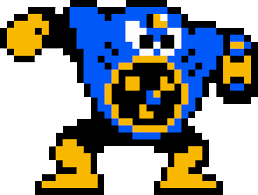
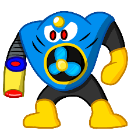

Now to go and take on one of this game's masters of cheapness, Air Man. His stage is pretty innocent, and after running through the stage so many times trying to avoid Air Man using one of his impossible to dodge attack patterns on me, I decided to go ahead and try some of the speed-runner type stuffs with the platforms in this stage. I normally do not try such things as the more common result is death. This stage has a couple things to throw at you, though... platforms you have to be patient on (or risk some silly jumps), and pippies. Those horrible horrible birds that have disturbed many a player of Mega Man games.
Passion Project: Capcom was hesitant to make a sequel due to poor sales of the first game, so the team worked on Mega Man 2 after hours. "Difficult" Focus: The Famicom version originally only had one difficulty level: "Difficult". Fan Involvement: The game featured Robot Masters submitted by fans, with roughly 8,370 boss design submissions received during development.
Air Man (DWN-010) is a Dr. Wily-created Robot Master from Mega Man 2 specialized for combat, known for his torso-based fan design and signature tornado-launchin Air Shooter weapon. He is considered a difficult boss due to randomized projectile patterns, though he is specifically weak to the Leaf Shield.